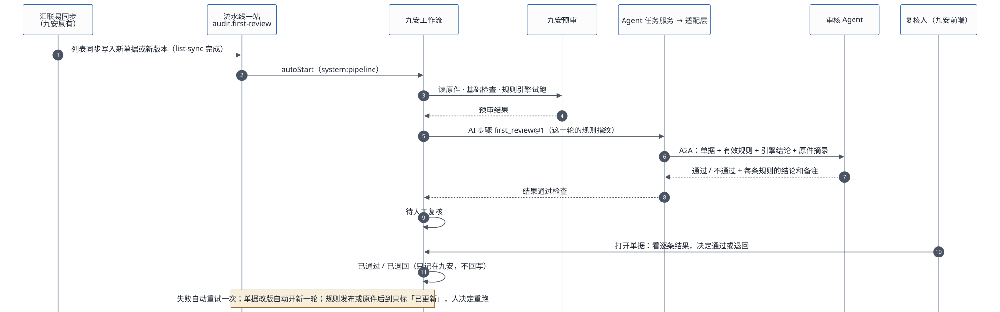

九安平台以后会接很多类型的 Agent：业务流程类、财务类、知识库类。本文写这套框架：架构、选型理由、三类 Agent 怎么接、AI 步骤与审批流、交付的接口、补丁怎么分层、谁维护什么。
2026-10-19 决定：网关层以后再做，本期先完成 PoC / MVP 和测试台。本期只实现初审跑通需要的部分：一问一答、按对象存结果、按单据类型路由。多轮对话、长任务、分区与串联、租户级调用随网关层做。范围见设计第 7 节。
现在做到哪了（2026-10-19）：
| 部分 | 状态 |
|---|---|
| 设计（本文、接口、初审契约、总览） | 设计稿 v2，待项目负责人批准 |
契约文件 contract/ |
已写好；schema 自检、例子过信封检查和任务检查都通过 |
| 测试台（用来验收补丁） | 已完成：t3.large、本机 MySQL 8.0、九安运行时在跑；九安副本由
poc/
构建，patches/
里的补丁按文件名顺序打进副本（记录：evidence/） |
| 九安补丁 0001–0006 | 没开始，是下一份计划；设计批准后写 |
审核 Agent 的 first_ |
没开始，和补丁 0005 一起做；在这之前审批流仍由 PoC 插件调用「九安审核AI」 |
| 网关层（多轮对话、长任务、分区与串联、租户级调用、按用法分额度） | 以后再做 |
- 一页总览：Agent 接入框架总览（HTML）
- 接口：Agent 接口：jiuan.agent/v1
- 第一个任务：单据初审 first_review@1
下文 J/ 指九安开发包的 code/
目录，P/ 指
audit-nexus/poc/app/，C/ 指
audit-nexus/contract/。所有引用都在源码上核对过，九安开发包只读，没有执行其中任何东西。
1. 结论
一套通用层，所有 Agent 共用；每类 Agent 只加一份任务契约。
- Agent 怎么接进九安：经九安留给接入方的模型接入口
J/providers/ai-model.mjs。文件头写明「由接手方实现」，九安把它登记为连接器ai-model。- 每次调用自动经过九安的统一调用中间件，暂停开关、额度、并发、时限、调用日志都现成（
J/src/platform/call-middleware.mjs:940-972）。 - 接入口只加一个通用方法
agentTask，不按任务各加一个。 - 下面放一个只有我们维护的 A2A 适配层
providers/nexus-a2a.mjs，九安里只有这一个文件知道 A2A。
- 每次调用自动经过九安的统一调用中间件，暂停开关、额度、并发、时限、调用日志都现成（
- 九安里的通用层：
- Agent 接入：管理员启用发布、保管密钥，从名片读出它支持的任务；
- 路由：哪个任务、什么条件，发给哪个已启用的发布；
- Agent 任务服务：组装、调用、检查、存结果、步骤状态、长任务收结果，对所有任务都一样。
- 任务层：每个任务一份契约（
C/tasks/<任务>/v<版本>/），加上九安里这个任务的组装器和展示。第一个任务是单据初审first_review@1。 - 业务流程归九安：审批流是第一个用到框架的业务流程，状态、留痕、人工复核都在九安里。Agent 不存任何状态。
没选的做法：
| 做法 | 为什么不选 |
|---|---|
| 每类 Agent 各写一套调用代码 | 发现、调用、断线、重试、错误码、密钥都要重写；Nexus 一升级就要改好几处 |
| 只给初审设计一份契约，以后的 Agent 再说 | 下一类 Agent 进来时，要么硬塞进初审的格式，要么另起一套，两边都难维护 |
照搬 PoC：插件挂在 platformRoutes +
直接注入模型客户端 |
注入的客户端绕过九安的调用中间件（J/），没有额度、日志、暂停开关 |
| 另起一个中转服务 | 多一个要部署、值守的服务；也违背「应用经 A2A 直接对接 Agent」 |
| 给 Nexus 新登记一个连接器 | 要改大约 20 处写死的
'ai-；没必要：ai-
本来就是「由接入方选择」的连接器（J/） |
2. 解耦的规则
- 每一方只依赖契约：九安不知道 Agent 的提示词、模型、版本；Agent 不知道九安的数据库、规则表结构、汇联易。
- 通用层不认识任何具体任务：适配层、Agent 接入、路由、Agent 任务服务里不出现任何一个任务的字段；任务的差别只在任务契约和任务层的代码里。
- 翻译集中在一处：九安的数据翻译成契约格式，只在这个任务的组装器里做；A2A 协议的细节只在适配层里。
- 硬条件用代码，判断用 Agent：能确定的事（哪家公司、哪类单据、在不在生效期）由九安代码定；要理解的事由 Agent 判断。
- 发给哪个 Agent 靠配置：路由表决定，以后按费用类型拆成几个 Agent，或新旧两版任务并存，都只改配置。
- 三层版本：信封、任务、Agent 各管各的（接口第 11 节）。
- 新代码放新文件：九安原文件只改注册和挂载的几行。
3. 架构

| 模块 | 层 | 做什么 | 新增 / 改动 | 谁维护 |
|---|---|---|---|---|
契约 contract/ |
通用 + 任务 | 信封、名片要求、错误码；任务目录、每个任务的契约和检查代码 | 新增 | 我们；改动由九安一起评审 |
A2A 适配层 providers/ |
通用 | 读名片、发信封、收流、断线查询、长任务收结果、信封检查 + 任务检查、修正一次、错误码转换 | 新增；不导入九安任何文件 | 我们 |
模型接入口 providers/ |
通用 | 加一个方法 agentTask，交给适配层；打开开关 |
改几行 | 九安 |
连接器登记
src/ |
通用 | ai- 的操作里加
agentTask；密钥来自「Agent 接入」时，不再要求单独绑定
ai-（现在没绑定连接器就起不来，:112-） |
改几行（安全相关，第 10 节） | 九安 |
Agent 接入 src/ |
通用 | 平台级启用：填发布编号、粘贴调用密钥，当场核对名片（契约和任务列表）+
tasks/ 验证，加密存九安存储；一个发布一把；401
标失效（交接文档第 2.6 节） |
新增；参考 P/ 的启用部分 |
九安（我们给参考实现） |
| 路由配置 | 通用 | 任务 + 条件 → 发布；每个任务一个开关 | 配置文件加一段 | 九安运维 |
Agent 任务服务
src/ |
通用 | 选发布、调组装器、经中间件调用、存结果、AI 步骤状态、自动重试、作废与标记、长任务收结果 | 新增 | 九安（我们给参考实现） |
| AI 步骤的展示组件 | 通用 | 页面上统一显示「进行中 / 完成 / 失败 / 拒绝 / 依据已更新」，结果交给任务自己的展示 | 新增 | 九安（我们给参考实现） |
任务的组装器与展示
src/ |
任务 | 九安数据 → input；output →
页面；登记这个任务用哪张平台卡片 |
每个任务新增一个 | 九安 |
| 平台卡片 | 任务 | 每种用法一张卡片，例如
audit.：暂停开关和调用日志按卡片分开；额度现在是整个
ai- 连接器共用一个每日上限（第 10 节第 2
条） |
每个任务新增 | 九安 |
审批流
src/ |
业务流程 | 九安预审 → AI 步骤（first_review）→ 人工复核 | 新增 | 九安（我们给参考实现） |
流水线一站 audit. |
业务流程 | 接在列表同步 hly.
之后，找出当前版本还没有轮次的单据逐张发起审批流 |
新增卡片；scheduler. 的接力加一支 |
九安 |
规则库
src/ |
业务流程 | 发布沿用九安已有的「提交复核 → 独立复核 →
发布」（J/）；预审拿已发布的规则，不再是空表（:198、222-） |
改动 | 九安 |
| 系统身份授权 | 通用 | 让 system:pipeline 能为指定公司读单据、跑预审和 AI
步骤 |
改动（安全相关，第 10 节） | 九安 |
| 界面 | 任务 + 业务流程 | 审批流面板、单据池卡片、规则发布按钮；「Agent 接入」页（可选：九安自己写，或复用 PoC「我的 Agent」卡片的逻辑） | 新增独立文件 + 挂载几行 | 九安（我们给参考实现） |
| 各个 Agent | — | 按任务契约干活；名片描述里写契约和任务 | Nexus 上新建或改提示词 | Agent 开发 |
4. 三类 Agent 在九安里怎么接

| 业务流程类 | 财务类 | 知识库类 | |
|---|---|---|---|
| 谁发起 | 流水线或工作流，身份 system:pipeline |
人在平台页面上「运行一次」，或定时（九安的调度现在只排列表同步，J/，要扩一支） |
人在页面上（问答面板、规则库里的「从知识推荐」），身份是这个人 |
| 对象 | 单据 | 期间、一批单据、公司 | 无，或规则、规则集 |
| 结果存哪 | 跟着对象：键是任务 + 对象，结果带对象版本 | 跟着对象和输入指纹 | 问答不存结果，只存会话编号（每个人自己的）；推荐的东西存成草稿 |
| 结果去哪 | 推进流程，例如进入人工复核 | 报告页 | 问答面板；规则草稿进规则库，照常复核、发布 |
| 作废 | 对象版本变了就作废，业务流程按新版本重跑 | 期间或输入变了就作废 | — |
| 额度 | 每张单据至少一次调用 | 一次分析可能调用多次（长任务收结果也算） | 按人限流 |
5. AI 步骤与审批流
5.1 AI 步骤
九安里每次调用 Agent 都是一个 AI 步骤，状态对所有任务一样（接口第 6 节）：
| 状态 | 什么时候 | 接下来 |
|---|---|---|
| 进行中 | 已经发出；或者长任务还没收到结果 | 收到结果后变成完成、拒绝或失败 |
| 完成 | 结果过了信封检查和任务检查 | 业务流程按任务的 outcome 往下走 |
| 失败 | 调用失败，或结果修正一次后仍不合格 | 可以重试的错误隔 5 秒自动重试一次（每轮一次）；再失败由人重试，或者转人工 |
| 拒绝 | Agent 回了 declined |
不重试，转人工；理由记进留痕 |
| 作废 | 对象变了（staleWhen） |
业务流程决定要不要按新版本重跑 |
| 依据已更新 | 规则、原件等变了（flagWhen） |
由人决定要不要重跑 |
系统步骤的回调都带着轮次和第几次调用；轮次变了，旧回调一律作废，所以晚到的结果不会写进新的一轮。重启时还停在「进行中」、而且超过租约时间的（长任务除外），改成失败，错误码
AGENT_STEP_INTERRUPTED（可以自动重试）。
5.2 分区与串联
- 分区：任务的
result.partitioned为真时，同一个对象可以拆成几份分别调用，比如一张单据的明细按费用类型分组，各发给对应的审核 Agent。分区编号由任务层的组装器给，AI 步骤的键里带上它；几份结果怎么合并，由业务流程决定。 - 路由事实：组装器在拼输入的同时交出路由事实（
task.json的routingFacts，例如documentType、expenseType），路由表的when只按这些名字比对。通用层不知道这些名字是什么意思。 - 串联：一个 AI
步骤的输出可以成为下一个步骤的路由事实。比如分拣任务回答「这张单据属于差旅」，业务流程把它作为
expenseType交给初审的路由。串联由业务流程编排，通用层只负责一步一步执行。
5.3 审批流（第一个业务流程）

| 状态 | 意思 | 谁能做什么 |
|---|---|---|
| 未发起 | 平台上线前已有的单据 | 人：发起 |
| 预审中 | 先读原件（取不到也继续），再跑九安的基础检查和规则引擎试跑 | — |
| AI 初审中 | AI 步骤 first_ 进行中 |
— |
| AI 初审失败 | AI 步骤失败或被拒绝 | 系统：可以重试的自动重试一次；人：重试、转人工 |
| 待人工复核 | 有了 AI 初审结果，或人选了转人工 | 人：通过、退回；「规则已更新」「原件已更新」时还可以重跑 |
| 已通过 / 已退回 | 这一轮结束；决定只记在九安，不回写汇联易 | — |
| 已失效 | 单据有了新版本，这一轮作废 | 系统：按新版本自动开新一轮 |

- 来单：
hly.list-sync跑完之后，平台按接力启动audit.first-review。它找出当前版本还没有轮次的单据（新单或改版），逐张发起审批流。- 不接在明细整理
hly.detail-projection后面：那一站只处理差旅报销单（J/src/report-detail-projection.mjs:9-13），对公付款不经过它。 - 九安可以关掉接力（
schedulerChain:false，J/scripts/start-analysis.mjs:73-75），这时由「运行一次」或定时触发。
- 不接在明细整理
- 预审：先用九安原有的读原件服务取原件文字，取不到也继续；再跑基础检查和规则引擎试跑。
- AI 初审：Agent
任务服务按路由表选发布，
first_review的组装器拼好输入（挑有效规则用resolvePublishedPolicies），经调用中间件调agentTask。 - 待人工复核：卡片显示「AI 初审：通过 / 不通过」，详情页显示综合备注和逐条结果。
- 人工复核：一位复核人通过或退回。复核人是九安的 admin 或 analyst，并且能看这家公司。和 AI 结论相反要写理由，退回要写退回说明。
5.4 存储
| 存什么 | 键 | 说明 |
|---|---|---|
| AI 步骤的结果 | formal-；result.
是 per_
的再加输入指纹；none 的不存 |
带对象版本、输入指纹、发布编号、agentVersion、Nexus
任务编号和 call_ |
| 审批流的状态 | formal- |
不绑单据版本，改版前后的轮次连在一起 |
| 多轮对话的会话编号 | 按人、按任务存 | 不存问答内容；同一会话上一轮没结束时，下一轮等它结束（Nexus 同时只跑一轮） |
- 都存在九安的键值存储里，用
compareAndWriteState带版本号写（J/src/mysql-analysis-store.mjs:476-494）：两个人同时操作，后到的回 409，重读再试。 - 值由存储层用 AES-256-GCM 加密。
- 留痕每次状态变化记一条：谁做的（人的账号，或
system:pipeline）、什么时候、做了什么；最多保留最近 200 条。
6. 交付接口
| # | 接口 | 谁调谁 | 文件 |
|---|---|---|---|
| I1 | 信封与任务契约（A2A） | 九安 → 各个 Agent | 接口、单据初审、C/ |
| I2 | A2A 适配层 | 九安的模型接入口 → 适配层 | 本节下文 |
| I3 | 模型接入口的 agentTask |
Agent 任务服务 → 调用中间件 → 模型接入口 | 本节下文 |
| I4 | Agent 任务服务 | 九安的业务流程、页面 → Agent 任务服务 | 本节下文（参考） |
| I5 | 审批流接口 | 九安前端 → 九安服务端 | C/ |
| I6 | 路由配置 | 九安运维 → Agent 任务服务 | 本节下文 |
| I7 | Agent 接入 | 管理员（页面或命令行）→ 九安服务端 | 交接文档第 2.6 节；沿用 agent-access-v1 的启用部分 |
I2 A2A
适配层（providers/nexus-a2a.mjs，只依赖 Node
标准库和 fetch）
createAgentClient({
nexusOrigin, // 'https://nxs-….tinyboat.blog'
getKey, // async ({ publishId }) => 'nxa_…'，从「Agent 接入」的启用记录读
tasks, // { 'first_review@1': { check, limits }, … }，来自 contract/tasks/
fetchImpl = fetch, now = Date.now,
}) → {
probe({ publishId }) → { ok, reason, tasks: ['first_review@1', …] }, // 读名片，不花钱
call({ publishId, request, files, conversationId, attempt, signal }) → {
status: 'completed' | 'declined' | 'pending', // pending 只出现在长任务
output, declined,
call: { publishId, taskId, contextId, callId, agentVersion, repaired },
},
collect({ publishId, request, taskId, contextId, signal }) → 同上, // 长任务收结果
}
// request 是整个请求信封；出错抛 Error，code 是九安的模型错误码，detail 带 Nexus 的错误码I3
模型接入口（providers/ai-model.mjs）
createModelClient多返回一个通用方法agentTask(input)：- 输入：
input = { publishId, request, files, conversationId, attempt, collect, dataContext, signal }； - 方法开头先调
assertModelDataAllowed(dataPolicy, input.dataContext)，再交给适配层。
- 输入：
MODEL_PROVIDER_IMPLEMENTED改成true；connectors.mjs里ai-model的操作加agentTask。- 调用记在哪张平台卡片上，由 Agent 任务服务用
runWithAttribution指定（例如audit.first-review），所以暂停开关和调用日志能按用法分开。额度不能：每张卡片的每日上限和整个连接器的上限是同一个数（J/src/platform/call-middleware.mjs:596-603），要按用法分额度得改中间件（第 10 节第 2 条）。 - 原有的
advisory、reviewDraftEvidence不在本期范围，保持原样。
I4 Agent 任务服务（九安内部，参考）
createAgentTaskService({ store, modelClient, enablement, routes, tasks }) → {
run({ actor, task, subject, conversation, attempt }) → step,
collect({ stepId }) → step,
view({ task, subject }) → step,
flags({ task, subject }) → { rulesUpdated, evidenceUpdated, … },
}
// tasks 里每个任务在九安这边登记：
// { task, version, platformAgentId, assemble(ctx) → { input, fingerprints }, project(output) → 页面用的数据 }I6 路由配置（九安配置文件里加一段）
"agents": {
"nexusOrigin": "https://nxs-….tinyboat.blog",
"autoRetryDelayMs": 5000,
"tasks": {
"first_review": { "enabled": false, "version": 1,
"routes": [ { "when": { "documentType": "corporate_payment" }, "publishId": "pub_…" },
{ "when": {}, "publishId": "pub_…" } ] }
}
}- 每个任务从上往下找第一条匹配的路由；
- 只认已经在「Agent 接入」里启用、并且名片声明了这个任务和版本的发布；
- 以后按费用类型拆 Agent，在
when里加expenseType即可； enabled默认关闭，由九安决定什么时候打开（第 10 节第 5 条）。
7. 补丁怎么交付
7.1 分层
| 补丁 | 层 | 内容 | 依赖 | 打完能看到什么 |
|---|---|---|---|---|
| 0001 契约与 A2A 适配层 | 通用 | contract/
目录、任务的检查代码；providers/
和它的测试（本地假 A2A 网关） |
— | 适配层测试通过；对真实发布 probe 能读出任务列表 |
| 0002 模型接入口与 Agent 接入 | 通用 | agentTask、打开开关、连接器操作，密钥来自启用记录时不再要求单独绑定；「Agent
接入」的服务端 |
0001 | 管理员启用一个发布后，ai- 连接器变成启用 |
| 0003 Agent 任务服务 | 通用 | 读 task.
决定发起、存结果、路由、作废；分区与路由事实；三种调用方式（一问一答、多轮对话、长任务，长任务由服务自己定时收结果，重启时接着收）；通用展示组件 |
0002 | 用 describe
任务在平台页面上「运行一次」能拿到结果；多轮对话和长任务用测试专用的任务契约跑通 |
| 0004 规则生效 | 业务流程 | 规则库的发布；预审拿已发布规则 | — | 规则发布后，预审的规则试跑有结果 |
| 0005 单据初审与审批流 | 任务 + 业务流程 | first_
的组装器与展示、平台卡片；审批流、流水线一站、系统身份授权 |
0003、0004 | 新单据同步进来后自动走到「待人工复核」 |
| 0006 审批流接口与界面 | 业务流程 | 审批流接口；单据池卡片、详情页面板、规则库「发布」按钮；「Agent 接入」页（可选） | 0005 | 复核人在页面上通过或退回 |
以后新增一类 Agent，只交付一个「任务补丁」：任务契约、九安里的组装器与展示、平台卡片、路由表的一行；业务流程类再加上用到它的流程。0001–0003 不动。
7.2 交付形态
- 补丁：针对九安 v0.5.3
生成，
git format-patch编号；每个补丁附一段说明：改了哪些文件、为什么、怎么测。 - 独立目录：适配层、契约和任务检查代码同时作为独立目录交付；九安升级时直接换文件，不用重打补丁。
- 基线风险不变：这个开发包是裁剪过的测试环境副本（并入九安第 1 节第 4 条），补丁要在九安真实代码线上重新生成一次才能定稿。
- PoC 用来验收补丁（测试台 2026-10-19 已就绪）：
- PoC 跑的是「九安开发包副本 +
补丁」：
poc/bench/build-jiuan.sh复制开发包、按文件名顺序打patches/jiuan-v0.5.3/里的补丁、装上锁定的mysql2；这六个补丁写好后放进这个目录就行； - 实例是 t3.large，本机 MySQL
8.0（Docker），和九安自己的测试编排一致（
J/deploy/gitea/compose.test.yaml:5用的是mysql:8.0），九安的 MySQL 存储、平台存储、连接器、调用中间件和流水线运行器都是真的在跑； - 没有真实的汇联易凭据，汇联易和钉钉的连接器是暂停的；种子单据和「模拟来单」经九安存储的
createBatch/upsertPage/updateBatch写进去，和同步进来的单据走同一条路。
- PoC 跑的是「九安开发包副本 +
补丁」：
8. 以后谁维护什么
| 东西 | 谁维护 | 改的时候要通知谁 |
|---|---|---|
| 信封与通用契约 | 我们；九安一起评审 | 两边。只加可选字段不用等对方；改结构要出新版本 |
| 任务契约 | 我们（和这个任务的 Agent 开发一起）；九安评审 | 输入加可选字段不用等对方；输出改动要升任务版本 |
| 各个 Agent 的提示词与发布 | Agent 开发 | 只要输出格式不变，不用通知九安；agentVersion
记进每次结果 |
| A2A 适配层 | 我们 | 九安：换文件即可 |
| Nexus 升级 | Nexus | 我们：适配层跑一遍测试；A2A 协议变了只改适配层 |
| 九安的通用层（Agent 接入、路由、Agent 任务服务） | 九安 | 不用通知我们，只要契约不变 |
| 九安的任务层和业务流程 | 九安 | 不用通知我们，只要契约不变 |
| 路由配置、密钥 | 九安运维 | — |
9. 和之前方案的关系
- 取代：
- 2026-10-19 上午的「初审专用契约
jiuan.first-review/v1和方法firstReview」：改成通用信封jiuan.agent/v1、通用方法agentTask，初审成了第一个任务first_review@1，输入输出的内容不变； - 并入九安第 7 节里「第一期只交付模型 provider（AI 独立建议）」；
- 客户规则与 AI 初审方案 A1 里的四种逐条状态：改成「通过 / 不通过 + 备注」。
- 2026-10-19 上午的「初审专用契约
- 沿用：
- 2026-10-18 确认的三条规则做法：复核人发布、每次初审读最新的已发布规则、规则更新由人决定重跑；
- 失败自动重试一次；一步人工复核；
- PoC
的状态机（
P/approval/workflow.mjs）作为审批流的参考实现。
- 不变：「我的 Nexus」（每个账号连接与启用）仍按并入九安的第三期。
10. 要九安拍板的
- 系统身份：业务流程类要以
system:pipeline读单据、跑预审和 AI 步骤。九安现在只允许 admin 或 analyst 的真人账号（J/src/analysis-runtime-services.mjs:37-50），要加一条受限的服务身份路径：只能读、只能用于登记过的任务、只限配置里的公司。这是安全相关的改动。 - 额度：
ai-model默认每天 150 次、并发 2（J/src/platform/call-middleware.mjs:16-19），所有任务共用；中间件现在给每张卡片的上限和整个连接器的上限是同一个数（:596-603）。要按用法分额度，得改中间件，让每张卡片有自己的上限。 - 人工复核的定位：通过、退回只记在九安里，不回写汇联易（九安「只读优先」；设计方案第 311 行的「回写」是以后的事）。
- 补丁基线：需要九安真实代码线上的相关文件。
- 什么时候打开：九安现在有意暂停了 AI
功能（
J/src/platform/agent-catalog.mjs:159「底座期间下线」）。每个任务的开关默认关闭，打不打开、什么时候打开由九安定。 - 调度：财务类要定时跑，九安的调度现在只排列表同步，要扩一支。
- 连接器的密钥：
ai-model现在没绑定ai-model-api-key就起不来（J/src/platform/connectors.mjs:112-124、195-203）。补丁 0002 要改成：密钥来自「Agent 接入」时不再要求绑定。这是安全相关的改动。 - 租户级的调用：平台级的能力清单、集团层面的问答和分析不属于哪一家公司（信封里
scope: tenant）。九安的数据治理现在每次调用都要一家公司（J/src/ai-data-governance.mjs），要加一条租户级的路径。
11. 验收
| 层 | 怎么算通过 |
|---|---|
| 契约 | 信封和任务的 schema 自检通过；first_
三对例子过信封检查和任务检查；describe
的例子过信封检查（已经通过） |
| 适配层 | 对本地假 A2A 网关的测试：正常流、分块和全文、断线后
tasks/、修正一次、declined、长任务收结果、error-
里的每种错误 |
| 通用层 | 换一个任务（describe）走同一条路，不改通用层的代码；多轮对话、长任务、分区、declined
用测试专用的任务契约跑通（这些契约放在测试目录里，不进任务目录） |
| 审核 Agent | 用两个例子请求各调一次（约 0.1 美元），结果过检查；夹带指令的单据不被带偏 |
| 九安 | 新单据自动走到「待人工复核」；失败自动重试一次；单据改版自动开新一轮；规则发布后标「规则已更新」并能重跑；两个人同时操作，后到的回 409 |
| 端到端 | 在 PoC（九安开发包 + 六个补丁）上跑，项目负责人确认后再提交 |